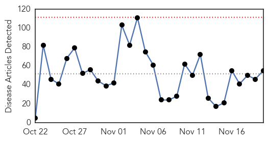
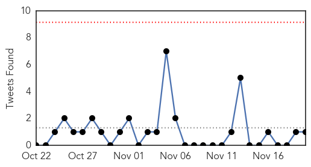
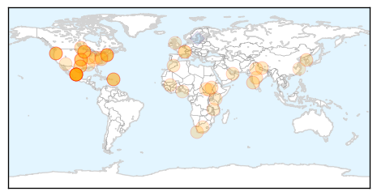

30 Day Trends
Web: 0 alerts, 0 warnings
Twitter: 0 alerts, 0 warnings
Top Articles:
- 0.987
- Chipotle E. coli outbreak reported in Turlock, California
- 0.981
- Hand, Foot And Mouth Disease On The Rise Parents Cautioned
- 0.980
- Flu shots protect more than just you
- 0.963
- Salmonella outbreak sickens 838 people
- 0.963
- Salmonella outbreak sickens 838 people
- 0.961
- 13 suspected cases -HFM Disease rising in BVI
- 0.934
- Free flu vaccine at Boston City Hall
- 0.928
- Chipotle Mexican Grill, Inc. (NYSE:CMG) - Chipotle Shares Crash On E. Coli Findings
- 0.905
- ADVICE: Stop the spread of the potentially deadly winter vomiting disease Norovirus
- 0.903
- Chipotle E. Coli Outbreak Extends To 6 States, Mexican Grill’s Shares Drop
- 0.886
- Number of syphilis cases on rise in region
- 0.873
- Chipotle E. coli
- 0.869
- Incidence rates up for major STDs
- 0.866
- Chipotle E. coli Outbreak Spreads - Washington, Oregon, California, Minnesota, Ohio and New York
- 0.845
- Chipotle E. Coli Outbreak Spreads To Six States
- 0.835
- Key dates in E. coli outbreak linked to Chipotle
- 0.835
- Key dates in E. coli outbreak linked to Chipotle
- 0.783
- STD rates rise dramatically, especially among men
- 0.778
- Health experts unite against TB and diabetes in Bali Declaration
- 0.772
- Chipotle E. Coli Outbreak Spreads to New York
- 0.769
- 179 exposed, 2 dead after superbug outbreak at UCLA hospital -
- 0.762
- Preparations for diseases need urgency, says Hwang-INSIDE Korea JoongAng Daily
- 0.747
- Health content from National Hog Farmer
- 0.723
- Health care employees should get a flu shot
- 0.721
- UN protection site in South Sudan at risk of being overwhelmed
- 0.720
- Gov. Dayton declares “Get Smart – Know When Antibiotics Work Week” in Minnesota
- 0.702
- Chipotle customer in Erie County contracted E. coli in October
- 0.692
- Rare TB case shows diagnosing, treating children is tough
- 0.689
- Staying alive- Nepali Times
- 0.663
- Red or purple spots on the skin -- what does it indicate?
- 0.659
- Limited Space Jeopardize Health Of Thousands In Malakal PoC Says MSF
- 0.651
- 'More money needed' to beat TB, health agencies warn
- 0.648
- Make Use of Uber App to Get Flu Prevention at Your Door Steps
- 0.645
- Jihadists in Europe stir visa debate in US
- 0.642
- NTM bacterial infection outbreak
- 0.642
- Battle against IS group mired in conflicting national interests
- 0.622
- Local case of E. coli linked to Chipotle Mexican Grill restaurants
- 0.620
- 20 Facts You Didn't Know About the Disease That Is Today the No. 1 Infectious Disease Killer in the World
- 0.607
- Special Reports
- 0.603
- Special forces storm besieged Mali luxury hotel
- 0.593
- South Sudan: MSF tackles spike in malaria with help of local communities
- 0.586
- SA launches world’s first early drug stock out warning system
- 0.586
- What is Lewy body dementia, which robbed robin williams of his sanity?
- 0.584
- HIV "Functionally Cured" In 14 Adults
- 0.578
- The most from the coast
- 0.569
- Oral Health Literacy Key To Kentucky Reaching Goals
- 0.566
- 40 cases of E. coli in Northwest outbreak linked to Chipotle
- 0.550
- Workers in public hospitals stage peaceful demo, asks parliament to intervene
- 0.548
- Africa News
- 0.547
- 'Kissing Bugs’ Are Spreading a Deadly Parasite in Texas
Showing top 50 articles...
Top Tweets:
- 0.560
- RT: Intensive care unit surveillance of flu infection in France: the 2009/10 pandemic and the three subsequent seasons: ht…
Web/News Articles
Tweets
Article Locations
Article Confidences